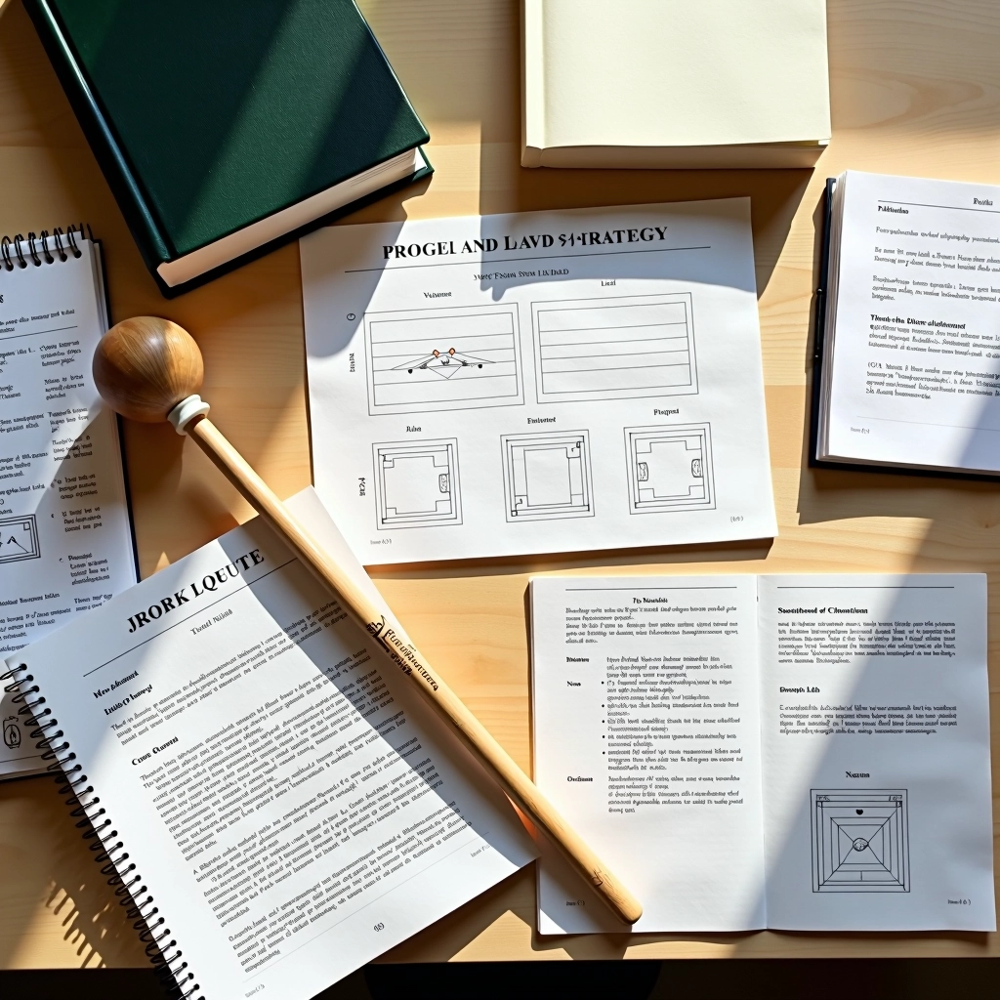
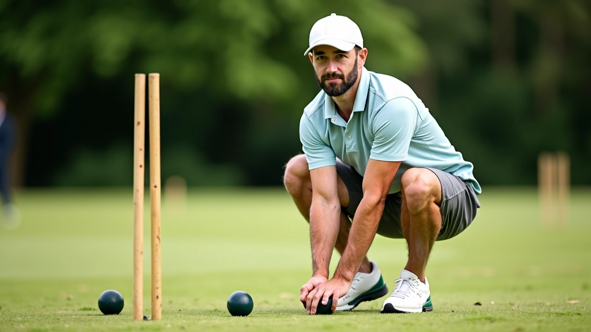
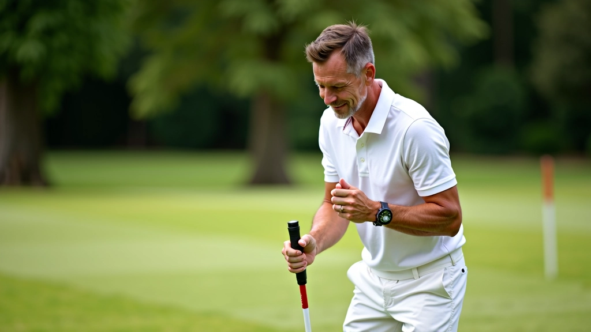
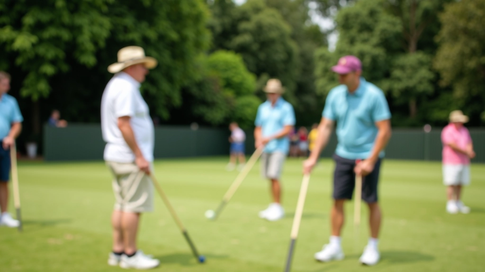
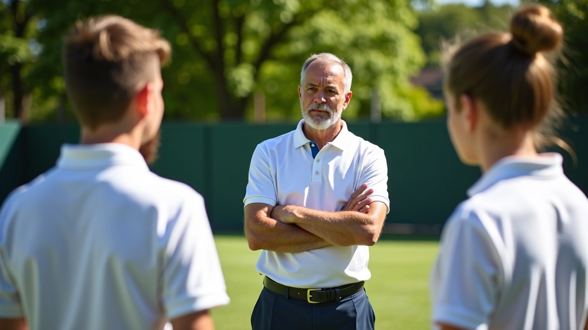
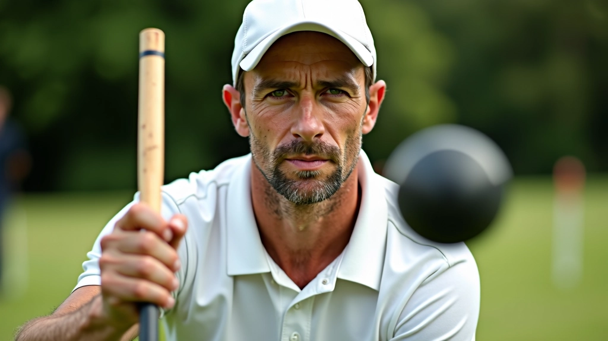

إتقان تقنية التقشير الأساسية
خطوات عملية لتعلم حركة التقشير بشكل صحيح...
خطواتك الأولى نحو إتقان لعبة الكروكيه — من المبادئ الأساسية إلى أول مباراة حقيقية


فريق التحرير والمراجعة
الكروكيه لعبة تبدو بسيطة لكن تتطلب دقة عالية وفهماً عميقاً للتقنيات الأساسية. بدون برنامج تدريب واضح، يمكن أن تأخذ الأخطاء الأساسية وقتاً طويلاً لتصحيحها. برنامجنا هنا يركز على ما يجب أن تتعلمه أولاً، كيفية تجنب العادات السيئة، وكيف تبني أساساً قوياً لمستقبلك في اللعبة.

هناك ثلاثة عناصر أساسية يجب أن تتقنها قبل أي شيء آخر. الوقفة الصحيحة تؤثر على كل حركة تقوم بها. إذا كنت تقف بشكل خاطئ من البداية، فستواجه مشاكل طوال حياتك في اللعبة.
قدماك بعرض الكتفين، الركبتان منحنيتان قليلاً، الجسم مائل قليلاً للأمام. تخيل خطاً مستقيماً من رأسك إلى كعبك. هذه الوقفة توفر التوازن والتحكم.
القبضة يجب أن تكون فضفاضة وطبيعية. ليست محكمة جداً. تخيل أنك تمسك عصفور صغير — بقوة كافية حتى لا يهرب، لكن ليس بقوة تؤذيه. اليد اليمنى في الأسفل، اليسرى فوقها قليلاً.
المضرب يتحرك مثل البندول — من الكتف والكوع معاً. الحركة تأتي من الجسم، ليس من المعصم. كلما كانت الحركة أكثر سلاسة، كانت النتائج أفضل.

هذا البرنامج التدريبي هو دليل تعليمي معلوماتي يقدم تقنيات وأساليب عامة للعبة الكروكيه. النتائج تختلف من شخص لآخر حسب الممارسة والاجتهاد. ننصح دائماً بالتدرب تحت إشراف مدرب متخصص أو فريق تدريب معترف به للحصول على ملاحظات مباشرة.

ركز على الوقفة والقبضة وحركة البندول الأساسية. لا تقلق بشأن الدقة بعد. مجرد بناء الذاكرة العضلية. جلسات تدريب 2-3 مرات في الأسبوع، 45 دقيقة لكل جلسة.
ابدأ بضرب الكرة بقوى مختلفة. تعلم كيف تتحكم بالمسافة. ابدأ بالضربات من 3-5 أمتار، ثم زد المسافة تدريجياً. أضف تمرينات الدقة البسيطة — ضرب الكرة نحو علامات محددة.
تعلم أساسيات تمرير الكرة والتقشير البسيط. لعب نقاط بطيئة مع لاعبين آخرين. ابدأ بفهم استراتيجية اللعبة وليس فقط الحركات الميكانيكية.
لعب مباريات تدريبية كاملة. اختبر ما تعلمته في ظروف حقيقية. ركز على الثبات النفسي والتركيز تحت الضغط.
الضربة المباشرة نحو الهدف. تركز على الخط المستقيم والتحكم بالقوة. أهم تقنية أساسية. معظم نقاطك ستأتي من هذه الضربة البسيطة.
نقل الكرة إلى زميل في الفريق. يتطلب دقة وتوقيت جيد. تعلم كيف تقرأ الملعب وتوضع كرتك في مكان مناسب لزميلك.
ضرب كرتك بحيث تلامس كرة الخصم ثم تستمر. هذا يعطيك ضربة إضافية. الحركة صعبة في البداية لكنها أساسية جداً.
ترك كرتك في موضع صعب للخصم. لا تفكر فقط في نقطتك التالية، فكر في إعاقة الخصم. هذا يتطلب خبرة لكنه مهم جداً.
النجاح في الكروكيه يعتمد على الممارسة المنتظمة والمنظمة. لا تمارس عشوائياً. لديك هدف واضح لكل جلسة تدريب. هنا خطة يمكنك متابعتها:


الكروكيه لعبة ذهنية أكثر من كونها بدنية. كم مرة سقطت ضربتك البسيطة في المباراة لكنك كنت تضربها بشكل مثالي في التدريب؟ السبب هو الضغط النفسي. تعلم كيف تبني ثقتك بنفسك وكيف تتعامل مع الأخطاء.
"التركيز على ما تستطيع التحكم فيه فقط — وضعيتك، تنفسك، خطتك. لا تفكر في نتيجة الضربة قبل أن تضربها."
خذ وقتك قبل كل ضربة. لا تسرع. تنفس بعمق. تذكر أن الأخطاء جزء من التعلم. حتى أفضل لاعبي الكروكيه في العالم يفشلون. الفرق هو أنهم يتعلمون من الفشل ويحاولون مرة أخرى بثقة أكبر.
برنامج التدريب هذا ليس معقداً. إنه بسيط وعملي وقابل للتطبيق من اليوم الأول. كل ما تحتاجه هو التزام حقيقي بالممارسة المنتظمة. في غضون 12 أسبوعاً، ستكون جاهزاً للعب مباريات حقيقية مع الثقة والمهارة.
تذكر أن الكروكيه لعبة يجب أن تستمتع بها. لا تضع على نفسك ضغطاً كبيراً في البداية. استمتع بعملية التعلم، واحتفل بكل تقدم صغير. قريباً جداً ستكتشف أن ما بدا مستحيلاً في البداية أصبح طبيعياً تماماً.
استكشف المزيد من الأدلة